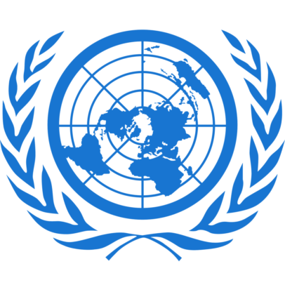

The UN was established after World War II with the aim of
preventing future wars, succeeding the ineffective League of
Nations. On 25 April 1945, 50 governments met in San
Francisco for a conference and started drafting the UN Charter,
which was adopted on 25 June 1945 and took effect on 24
October 1945, when the UN began operations. Pursuant to the
Charter, the organization’s objectives include maintaining
international peace and security, protecting human rights,
delivering humanitarian aid, promoting sustainable
development, and upholding international law. At its founding,
the UN had 51 member states; there are now 193, representing
the vast majority of the world’s sovereign states.
The UN has six principal organs: the General Assembly; the
Security Council; the Economic and Social Council; the
Trusteeship Council; the International Court of Justice; and the
UN Secretariat. The UN System includes a multitude of
specialized agencies, such as the World Bank Group, the World
Health Organization, the World Food Programme, UNESCO,
and UNICEF. Additionally, non-governmental organizations
may be granted consultative status with ECOSOC and other
agencies to participate in the UN’s work. The UN’s chief
administrative officer is the Secretary-General, currently
Portuguese politician and diplomat António Guterres since 1
January 2017. The organization is financed by assessed and
voluntary contributions from its member states. The UN, its
officers, and its agencies have won many Nobel Peace Prizes,
though other evaluations of its effectiveness have been mixed.
Some commentators believe the organization to be an
important force for peace and human development, while
others have called it ineffective, biased, or corrupt.
The organization’s mission to preserve world peace was
complicated in its early decades by the Cold War between the
United States and Soviet Union and their respective allies. Its
missions have consisted primarily of unarmed military
observers and lightly armed troops with primarily monitoring,
reporting and confidence-building roles. UN membership grew
significantly following widespread decolonization beginning in
the 1960s. Since then, 80 former colonies have gained
independence, including 11 trust territories that had been
monitored by the Trusteeship Council. By the 1970s, the UN’s
budget for economic and social development programmes far
outstripped its spending on peacekeeping. After the end of the
Cold War, the UN shifted and expanded its field operations,
undertaking a wide variety of complex tasks.
UN Vacation Program © 2024. All rights reserved.